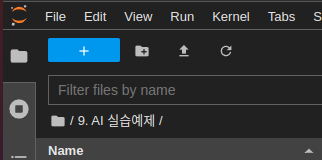
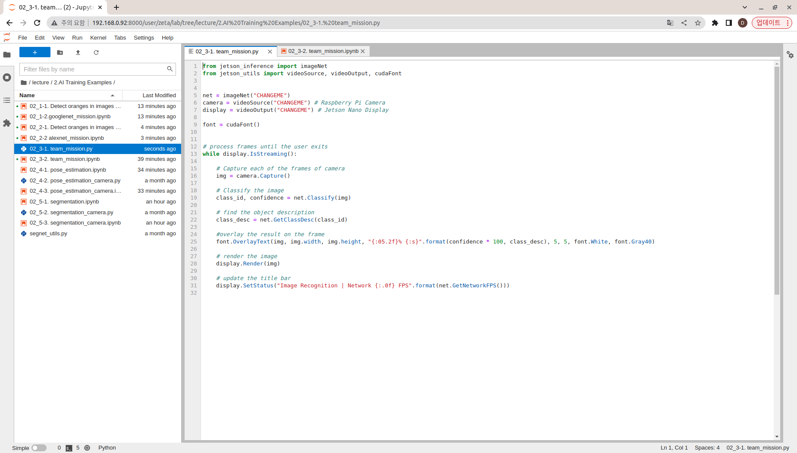

Mission Project
Project Name: Image Recognition using Camera
ZetaBot is equipped with Raspberry Pi camera located on the front panel. Using this camera we can classify real life object using either GoogleNet, or AlexNet networks.
Our image recognition model can classify up to 1000 images, the list of the classifiable images are: https://github.com/dusty-nv/jetson-inference/blob/master/data/networks/ilsvrc12_synset_words.txt
Let us build a python program as a team for image recognition with camera.
Writing Python Program as a Team
Create a new python file in the Jupyter Notebook Environment:
Press the blue plus button on the top left corner of the web.

{kind=link}
Create a new python file by pressing the
Python Filebutton
Rename the untitiled python file to
02_3-1. team_mission.py
{kind=link}
On the new python file, import the libraries necessary. For our Image Recognition task, we need to import the Jetson inference library modules and jetson utility library modules
jetson_inference: This library contains all the pre-built networks that can be used for inference task and a functions that would allow for custom models to be used for inference tasks.imageNet: We are importing imageNet module for our image classification task.
jetson_utils: This library contains modules that are responsible for processing input and output sources along with output stream methods. We will be importing the following modules:videoSource: used to process input source (whether it is a camera, an image, or a video).videoOutput: used to process the output stream.cudaFont: this module allows for overlay on the output stream.
from jetson_inference import imageNet from jetson_utils import videoSource, videoOutput, cudaFont
After importing in the necessary modules, initialize the necessary variables. Since we wish to infer a network with a camera and show the results with our output stream we will need:
netvariable for holding the nvidia pre-built networks. For this mission we are using googleNet network. (but you may change it to different net).cameravariable for handling the input stream. Since our zetabot uses Raspberry Pi camera, the registration of the devices iscsi://0.displayvariable for handling the output stream. Although we are accessing the code remotely on our remote computer, the zetabot is equipped with a touch screen display. The display is set onDISPLAY://0fontvariable for handling the overlay text for our output stream.
net = imageNet("googlenet") camera = videoSource("csi://0") # Raspberry Pi Camera display = videoOutput("DISPLAY://0") # Jetson Nano Display font = cudaFont()
For this task we are utilizing our camera. On our previous trials, we had to to an inference on a single image. The program could recieve the one image infer it with the network and output a single result.
But with a camera, we need to repeatedly run the inference so that we may capture the incoming frames from the camera and output a constant stream of results.
We may achieve this by running a while loop until an envoked output stream window is killed by the user.
# process frames until the user exits while display.IsStreaming():
Within the while loop:
Capture the current frame from the camera, run the inference, and determine the classification of the object.
# Capture each of the frames of camera img = camera.Capture() # Classify the image class_id, confidence = net.Classify(img) # find the object description class_desc = net.GetClassDesc(class_id)
Overlay the determined class of the frame with the confidence metric, and output the result.
#overlay the result on the frame font.OverlayText(img, img.width, img.height, "{:05.2f}% {:s}".format(confidence * 100, class_desc), 5, 5, font.White, font.Gray40) # render the image display.Render(img) # update the title bar display.SetStatus("Image Recognition | Network {:.0f} FPS".format(net.GetNetworkFPS()))
To run the custom program you have made, go to your team_mission jupyter notebook:
02_3-2. team_mission.ipynb
- Running the cell codeCtrl + Enter
{kind=link}
Check if your python notebook can read the python code you have written:
cat /home/zeta/notebook/lecture/'2.AI Training Examples'/'02_3-1. team_mission.py'One important thing about the zetabot is that the Raspberry Pi camera is constantly running.
In order to use the camera for our task we must disable it first by running the following command:
%%capture !pm2 stop 5This will allow the camera to be used for our program.
Execute the team_mission python code.
%%capture # Comment this cell if you wish to see the program output %env DISPLAY=:0 !python3 /home/zeta/notebook/lecture/'2.AI Training Examples'/'02_3-1. team_mission.py'Be sure to turn the camera back online by:
%%capture !pm2 start 5